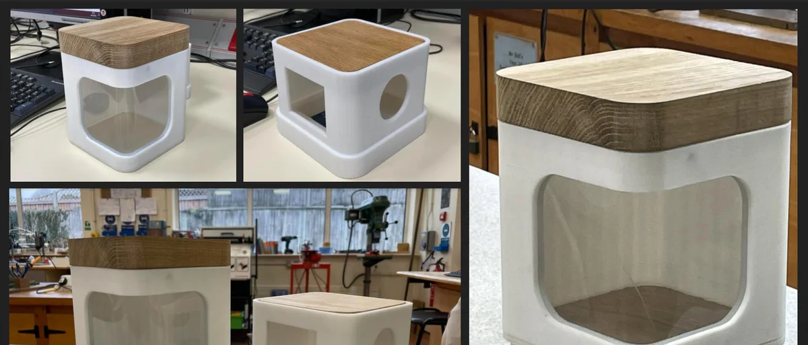

milo tek
software engineer. london.
19, from the UK, living in London. I write backend and infrastructure code for the Google Search app, which is a long way of saying google.com.
Outside work I keep a NixOS config that repaints my whole desktop from one colour, make things with Pixeljam Studios, and draw when I can be bothered.
- Search, for mobile. Mostly the parts nobody sees.
- Bumping flake inputs on nixeljam far more often than is sensible.
- Moving my blog posts into an Obsidian vault so writing one doesn't mean opening an editor.
- Still playing Minecraft 1.6.4 like it's 2013.
Software Engineer (Apprentice) at Google, London.
Google Search, mobile
- Backend and infrastructure work on the Google Search app.
- Built developer tools for the engineers working on AI Mode.
- Helped implement page transitions between the tabs on the results page.
- 4 Sep 2026my website is my desktop
Why the new site looks like a tiling window manager, and what is actually holding it up.
 nixeljamMy NixOS config. One flake, every machine, one colour.LockynA studying app for GCSE and sixth form students. Unreleased, source is private.legacy console shadersMake Minecraft Java look like the Xbox 360 edition.
nixeljamMy NixOS config. One flake, every machine, one colour.LockynA studying app for GCSE and sixth form students. Unreleased, source is private.legacy console shadersMake Minecraft Java look like the Xbox 360 edition.
AutoPet feederAn automatic pet feeder, designed and built to a client's spec. The client was my neighbours.MakersBNBAn AirBnB clone built by six of us in a week, test-first the whole way.habitsA habit tracker that renders as a GitHub contribution grid, for a screen on my wall.


If you link me, use one of these. Right click, save, host it yourself, please do not hotlink.
and some I like: